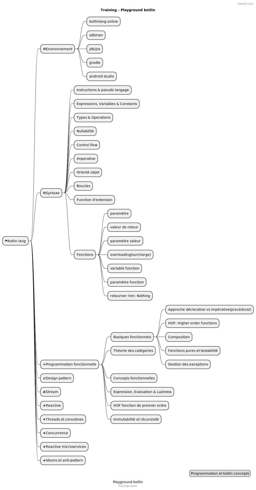

التدريب - Kotlin
Publié le 12 May 2022
خريطة ذهنية

البرمجة الوظيفية
التمارين مأخوذة من الكتاب:
البرمجة الوظيفية في كوتلن بواسطة الدروس
كتبه Massimo Carli
repo: https://github.com/kodecocodes/fpk-materials
الصياغة
FirstProgramTest
مفاهيم: عرض الشاشة, وظيفة
FirstProgramTest:https://github.com/cheroliv/cheroliv.com/blob/master/codes/src/test/kotlin/programming/FirstProgramTest.kt[مصدر]+
ConcatFunctionTest
مفاهيم: ذاكرة, متغير, قيمة, كائن, تمديد الدالة
ExampleUnitTest: مصدر
نتيجة اختبار رسالة عيد الميلاد
المفاهيم: المجموعات, الحلقات
مقدمة إلى كوتلين
BirthdayMessageTestOutput:https://github.com/cheroliv/cheroliv.com/blob/master/codes/src/test/kotlin/programming/BirthdayMessageTestOutput.kt[مصدر]+
دورة Kotlin

أساسية وظيفية
النهج التصريحي X الأمر
package functional
import kotlin.test.Test
import kotlin.test.assertEquals
class DeclarativeTests {
val input = listOf(
"123", "abc", "1ds", "987", "abdf", "1d3", "de1", "88", "101"
)
fun imperativeSum(list: List<String>): Int {
var sum = 0
for (item in list) {
try {
sum += item.toInt()
} catch (_: NumberFormatException) {
}
}
return sum
}
@Test
fun `test imperative approach`() {
imperativeSum(input).run {
println("Sum $this")
assertEquals(1299, this)
}
}
fun isValidNumber(s: String) = try {
s.toInt()
true
} catch (_: NumberFormatException) {
false
}
fun declarativeSum(list: List<String>) = list
.filter(::isValidNumber)
.map(String::toInt)
.sum()
@Test
fun `test declarative approach`() {
assertEquals(1299, declarativeSum(input).apply {
println("Sum $this")
})
}
}تمرين 1.1
قم بتنفيذ الدالة sumInRange، التي تجمع القيم في
قائمة<String> في نطاق معين. التوقيع هو :
fun sumInRange(input: List<String>, range: IntRange): Int@Test
fun `Exercise 1_1`() {
assertEquals(4, sumInRange(
listOf("1", "10", "a", "7", "ad2", "3"),
1..5
).apply { println("sumInRange 1..5: $this") }
)
}جربه وتحقق من إجابتك معhttps://github.com/cheroliv/cheroliv.com/blob/master/codes/src/test/kotlin/functional/DeclarativeTests.kt[حل, windows="_blank].
الوظائف ذات الترتيب الأعلى
package functional
import java.io.ByteArrayOutputStream
import java.io.PrintStream
import java.lang.System.*
import java.lang.Thread.sleep
import kotlin.math.sign
import kotlin.test.Test
import kotlin.test.assertEquals
class BasicsHOFTests {
val ONE_SECOND = 1000L
@Test
fun `high order function`() {
//capture de la sortie standard
val standardOut: PrintStream? = out
val outputStreamCaptor = ByteArrayOutputStream()
setOut(PrintStream(outputStreamCaptor))
3.times { println("Hello") }
assertEquals(
buildString {
repeat(3) { append("Hello\n") }
deleteAt(length - 1)
}, outputStreamCaptor
.toString()
.trim()
)
//libération de la sortie standard
setOut(standardOut)
}
fun Int.times1(fn: () -> Unit) {
for (i in 1..this) {
fn()
}
}
fun Int.times2(fn: () -> Unit) {
for (i in 1..this) fn()
}
fun Int.times3(fn: () -> Unit) =
(1..this).forEach { fn() }
fun Int.times4(fn: () -> Unit) =
repeat((1..this).count()) { fn() }
fun Int.times(fn: () -> Unit) =
(1..this).forEach { _ -> fn() }
}تمرين 1.2
نفّذ chrono، الذي يقبل دالة من النوع`() →`
الوحدة في المدخل وتعيد الوقت المستغرق في تنفيذها. التوقيع هو :
fun chrono(fn : () -> Unité) : Long@Test
fun `Exercise 1_2`() {
val waitOneSec = { sleep(ONE_SECOND) }
chrono(waitOneSec).apply {
println("chrono: $this")
assertEquals(1, sign)
}
}جربه وتحقق من إجابتك معhttps://github.com/cheroliv/cheroliv.com/blob/master/codes/src/test/kotlin/functional/BasicsHOFTests.kt[الحل, windows="_blank].
التأليف
package functional
import kotlin.test.Test
import kotlin.test.assertEquals
fun double(x: Int): Int = 2 * x
fun square(x: Int): Int = x * x
fun squareAndDouble1(x: Int) = double(square(x))
infix fun <A, B, C> ((A) -> B).compose(g: (B) -> C)
: (A) -> C = { a -> g(this(a)) }
class CompositionTests {
@Test
fun composition_impure() {
assertEquals(200, double(square(10)))
assertEquals(200, squareAndDouble1(10))
}
@Test
fun composition_pure() {
val squareAndDouble = ::square compose ::double
assertEquals(200, squareAndDouble(10))
}
}الوظائف النقية وقابلية الاختبار
package functional
import java.io.ByteArrayOutputStream
import java.io.PrintStream
import java.lang.System.out
import java.lang.System.setOut
import kotlin.test.Test
import kotlin.test.assertEquals
var count = 0
//impure car une variable global subit un effet de bord
fun impure(value: Int): Int {
count++
return value + count
}
//impure car utilisation de la sortie standard qui fait muter le system
fun addOneAndLog(x: Int): Int {
val result = x + 1
println("New Value is $result")
return result
}
//pure
fun addOne(x: Int) = (x + 1).run {
Pair(this, "New Value is $this")
}
class PureTests {
@Test
fun `impure fonction`() {
assertEquals(3, impure(2))
val standardOut = out
val outputStreamCaptor = ByteArrayOutputStream()
setOut(PrintStream(outputStreamCaptor))
addOneAndLog(3)
assertEquals(
"New Value is 4",
outputStreamCaptor
.toString()
.trim()
)
setOut(standardOut)
}
@Test
fun `pure fonction`() {
addOne(3).run {
assertEquals(4, first)
assertEquals("New Value is 4", second)
}
}
}معالجة الاستثناءات
package functional
import org.junit.jupiter.api.assertThrows
import kotlin.Result.Companion.failure
import kotlin.Result.Companion.success
import kotlin.test.Test
import kotlin.test.assertEquals
//NumberFormatException est un effet de bord qui rend la fonction impure
fun strToInt(str: String) = str.toInt()
//pure
fun strToIntOrNull(str: String) = try {
str.toInt()
} catch (nfe: NumberFormatException) {
null
}
//pure avec gestion de l'exception plus élégante
fun strToIntResult(str: String): Result<Int> =
try {
success(str.toInt())
} catch (nfe: NumberFormatException) {
failure(nfe)
}
class ExceptionHandlingTests {
@Test
fun impure() {
assertThrows<NumberFormatException> { strToInt("foo") }
assertEquals(1, strToInt("1"))
}
@Test
fun pure() {
assertEquals(null, strToIntOrNull("foo"))
assertEquals(1, strToIntOrNull("1"))
}
@Test
fun `pure avec result`() {
assertEquals(1, strToIntResult("1").getOrNull())
assertEquals(
"For input string: \"foo\"",
strToIntResult("foo")
.exceptionOrNull()
?.message
)
}
}نقاط رئيسية
-
في حين أن البرمجة الموجهة بالكائنات تعني البرمجة مع الكائنات،
البرمجة الوظيفية تعني البرمجة باستخدام الدوال. تقوم بتقسيم مشكلة إلى عدة مشكلات فرعية، وتقوم بنمذجتها باستخدام الوظائف
-
الوظائف ذات الترتيب الأعلى تقبل وظائف أخرى كمدخل أو تُرجع وظائف أخرى
تعمل كقيم إرجاع نظرية الفئات هي نظرية التركيب، وأنت تستخدمها لفهم كيف يمكنك تركيب وظائفك في برنامج عمل. قيمة إخراج الدالة النقية تعتمد فقط على معلمات الإدخال الخاصة بها، وهي ليس له آثار جانبية
-
التأثير الجانبي هو شيء تقوم به الوظيفة إلى العالم الخارجي. هذا
قد يكون سجلًا في المخرج القياسي أو تعديل قيمة متغير عام. البرمجة الوظيفية تعمل للوظائف النقية، لكنها توفر أيضًا أدوات لتحويل الوظائف غير النقية إلى وظائف نقية. يمكنك تحويل وظيفة غير نقية إلى نقية بنقل الآثار لجعلها جزء من قيمة الإرجاع.
-
البرمجة الوظيفية هي مسألة تركيب.
إدارة الأخطاء هي حالة نموذجية للآثار الجانبية، وكوتولين تزودك بالأدوات لإدارتها وظيفياً
تعميق java8: تعبيرات lambda والواجهات الوظيفية
نظرية الفئات
النظرية الرياضية للفئات:
أساسيات الدوال
تمرين 2.1
هل يمكنك كتابة مثال على دالة تُطابق قيمًا مميزة
حيث أن المجال يأخذ قيمًا غير متميزة في المجال، مثل f(b) و f(c) في الشكل أدناه؟
جربه، ثم تحقق من مشروع التحدي للحصول على حل لترى كيف فعلت ذلك
ستجد نصائح وشرحًا باتباع الرابط إلى ال الحل.
تمرين 2.2
هل يمكنك كتابة الدالة العكسية للضعف؟
ما هما المجال والمدى للدالة العكسرية؟
تحقق من مشروع التحدي والملحق B للحصول على الحل.
fun chrono(fn : () -> Unité) : Long@Test
fun `Exercise 1_2`() {
val waitOneSec = { sleep(ONE_SECOND) }
chrono(waitOneSec).apply {
println("chrono: $this")
assertEquals(1, sign)
}
}جربه وتحقق من إجابتك معhttps://github.com/cheroliv/cheroliv.com/blob/master/codes/src/test/kotlin/functional/BasicsHOFTests.kt[حل, نوافذ="_blank].